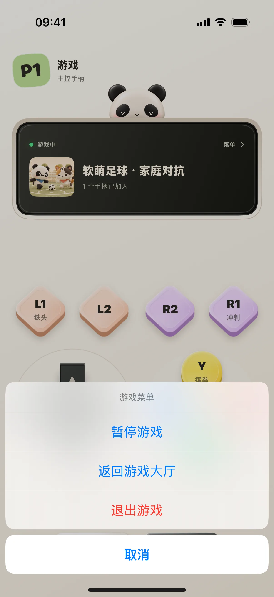
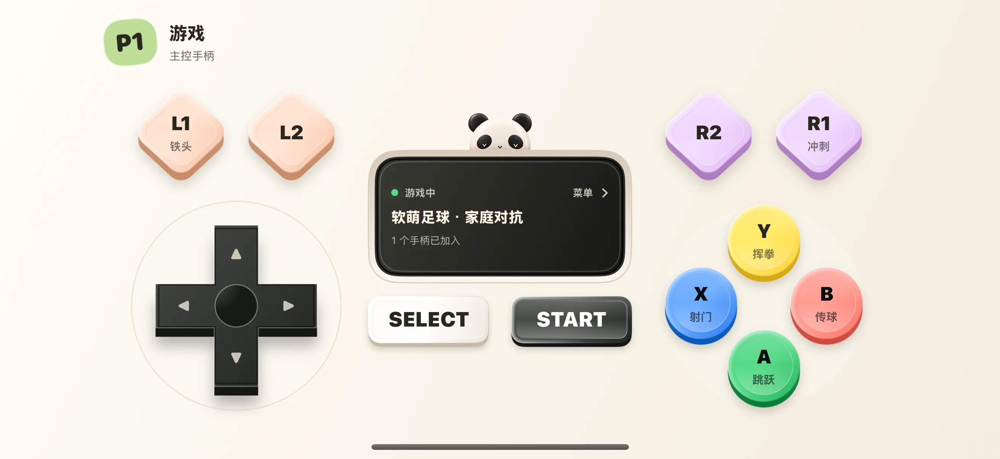

奶猫街机由 Mac 运行游戏，手机作为手柄。第一次玩时，先确认屏幕上的玩家编号，再尝试移动与动作键；暂停和回大厅都从中间的小屏菜单进入。
开始前准备
- iPhone / iPad 安装奶猫妙控 1.2.0，Mac 安装同版本配套端；完成配对，并允许 Mac 端的辅助功能权限。需要电脑画面时，再开启屏幕录制权限。
- Mac 上需要有已经安装、能运行的街机游戏。人数与输入方式由游戏适配决定；设置更多人数不会把单人游戏自动改成多人游戏。
1. 进入街机布局，打开游戏大厅
在 App 底部点“布局”，在列表中找到“街机”。布局较多时用搜索框搜索名称；有多个桌面的方案先点右侧箭头展开，再点桌面名称；搜索具体桌面名称也能找到它。未开始游戏时，点中间小屏的开启游戏入口；也可以从 Mac 奶猫妙控的“街机”入口打开大厅。
确认 Mac 显示游戏大厅后再选择游戏。手机控制的是这一台 Mac 的游戏实例，不是独立在手机里启动一份游戏。
2. 在 Mac 选择一个已经安装的游戏
在大厅中点击游戏卡片，或由主控手柄用方向键选择并按 A／START 开始。若游戏还没有安装，使用大厅的“添加游戏”选择可运行的 HTML、ZIP 或 .vkarcade 包。
纯源码项目需要先构建；只有一个网址也不意味着整站资源已经离线安装。先确认游戏在 Mac 上能正常打开，再排查手机输入。
3. 看清玩家编号，再试动作键
游戏启动后，检查手机页头的 P1、P2 等编号，以及小屏里的游戏名称和状态。先做一次方向移动，再按当前游戏显示的一颗动作键，确认控制的是自己的角色。
足球示例把 A、B、X、Y 显示为跳跃、传球、射门、挥拳。其他游戏可以使用不同映射，不能只凭字母记住固定动作。

4. 点中间小屏，打开主控菜单
在游戏进行中点中间 LED 小屏。主控手柄会看到“暂停游戏”“返回游戏大厅”“退出游戏”等操作；先打开菜单认识入口，再取消返回。
需要暂停时，明确选择“暂停游戏”，然后在 Mac 检查游戏是否暂停。菜单打开本身不等于游戏已经暂停。恢复时重新进入菜单选择继续。

5. 横放手机，重新熟悉肩键位置
把手机横放，检查方向区、动作键和肩键的位置。先松开所有按键，再换握持方式；重新做一次轻微方向输入，确认角色响应。
图中横屏是实际旋转后的 App 布局，并非另一个游戏或另一套映射。

6. 加入第二台设备，并在结束时退出
第二台手机与同一台 Mac 配对后，检查是否得到另一个玩家编号，再分别测试独立移动。显示等候时，先核对游戏人数限制和席位，不要反复开始新局。
结束时由主控从小屏菜单返回大厅或退出游戏，再确认 Mac 游戏窗口的状态。外部原生游戏所需的系统虚拟手柄是另一条功能路径；1.2.0 的街机流程不依赖它。
操作不符合预期时
另一台手机显示“等候”？
游戏可能只有一个玩家席位，或人数已经满。检查游戏支持人数和当前玩家列表；改变人数设置不会给游戏补写多人逻辑。
普通玩家点小屏，没有主控菜单？
暂停、返回大厅和退出由主控提供。先确认手机显示的是主控手柄还是其他玩家身份。
能直接拿这个布局控制任意 Mac 原生游戏吗？
本文讲的是奶猫街机运行器中的游戏。1.2.0 的 macOS 发布包未提供系统虚拟 HID 手柄，不能把街机手柄接入等同于外部游戏的系统手柄支持。
本文按奶猫妙控 1.2.0 的界面与操作编写，更新于 2026 年 9 月 10 日。查看更新日志 · 连接与权限帮助。